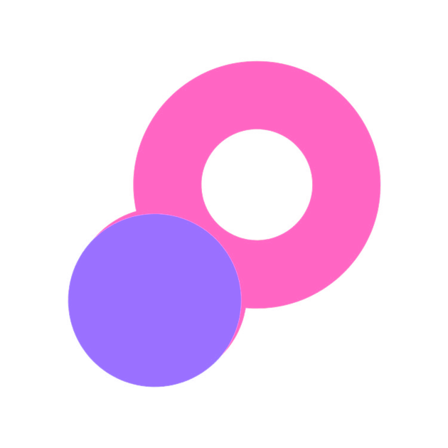

<p-menubar (click)="onClickMenuItem($event)" [model]="items">
  <!-- TODO: All buttons should be the same size, bigger music and artists buttons -->
  <ng-template pTemplate="start">
    
  </ng-template>

  <ng-template pTemplate="end">

    <!-- TODO: On hover show publicAddress if user has a name, if not show publicAddress instead of name -->

    <p-button (click)="openCreateNftModal()" [style]="{'border-color':'#BA68C8'}"
      *ngIf="isWalletConnected && user?.verified"
      styleClass="p-button-outlined p-button-rounded p-mr-2">
      <span class=" p-text-bold">Create NFT</span>
    </p-button>

    <button pButton pRipple type="button" *ngIf="!isWalletConnected" (click)="openWalletsModal()" label="Connect wallet"
      icon="pi pi-sign-in" class="p-button-rounded p-button-danger"></button>
    <button *ngIf="isWalletConnected && !user?.name && !user?.profilePic" (click)="op.toggle($event)" pButton pRipple
      type="button" label={{address}} icon="pi pi-sign-in" class="p-button-rounded p-button-danger "></button>

    <p-button [style]="{'border-color':'#BA68C8'}" (click)="op.toggle($event)"
      *ngIf="user?.name && user?.profilePic && isWalletConnected" styleClass="p-button-outlined p-button-rounded">
      
      <span class="p-ml-2 p-text-bold">{{user?.name}}</span>
    </p-button>

  </ng-template>

</p-menubar>
<p-messages *ngIf="!isProduction" severity="error">
  <ng-template pTemplate>
    <i class="pi pi-exclamation-triangle"></i>
    
    <div class="p-mr-2">This site is on TESTNET. It is for testing purposes and all the data will be wiped out.
      All feedback is welcome!
      On information how to connect to the Polygon(Matic) testchain click
      <a href="https://docs.matic.network/docs/develop/metamask/testnet/" target="_blank"> <strong>HERE</strong></a>
    </div>
    <i class="pi pi-exclamation-triangle"></i>

  </ng-template>

</p-messages>
<p-overlayPanel #op>
  <ng-template pTemplate>
    <button *ngIf="!isProduction" (click)="viewProfile(); op.hide()" pButton pRipple type="button" label="View Profile"
      icon="pi pi-fw pi-user" class="p-button-secondary p-button-text"></button>
    <button (click)="logout(); op.hide()" pButton pRipple type="button" label="Disconnect" icon="pi pi-fw pi-power-off"
      class="p-button-secondary p-button-text"></button>
  </ng-template>
</p-overlayPanel>
